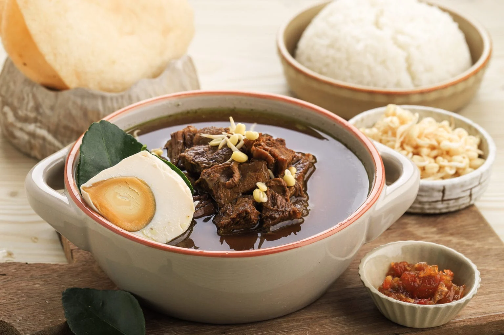

Home
Rawon Soup

Description
Rawon is an Indonesian beef soup, native to Surabaya, East Java. It is known for its distinctive black color, a result of its main ingredient: black keluak nut. Its savory, earthy taste is emblemetic of the culture it originates from, and is thus a perfect introduction to Indonesian cuisine.
Recipe
Main Ingredients
- 1 pound beef shank, cubed
- 2 tablespoons of oil
- 6 and a half cups of water
- A quarter tablespoon of black pepper
- 6 kaffir lime leaves
- 1 teaspoon of lemongrass paste
- 1 stalk of green onions (chopped)
- 2 and a half teaspoons of sugar
- 1 teaspoon of tamarind paste, diluted in tbsp water
Rawon Spice Mix
- 7 shallots, minced
- 3 cloves garlic, minced
- 5 keluak, steeped in hot water
- Half an inch of fresh turmeric, sub a quarter teaspoon of ground turmeric
- 4 candlenuts, roughly chopped
Toppings and Complements
- steamed rice
- sambal (red chilli paste)
- shrimp crackers
- bean sprouts
- boiled eggs
- fried onions
Steps
- Into a large pot, heat oil on medium-high heat.
- Once oil is hot, add in the rawon spice mix, lime leaves, and lemongrass paste. Stir until mixture is fragrant.
- Add in beef shank and toss it in the spice mixture until well-combined. Continue to cook until beef is seared.
- Add in water, salt, pepper, tamarind paste, and granulated sugar. Turn down the heat to low-heat, and let simmer until the soup boils and meat is tender, about 1 hour.
- Turn off the heat, then stir in chopped green onions.
- Serve rawon over steamed rice, then garnish with your desired toppings. ENJOY!
Source: dwellbymichelle.com/nasi-rawon